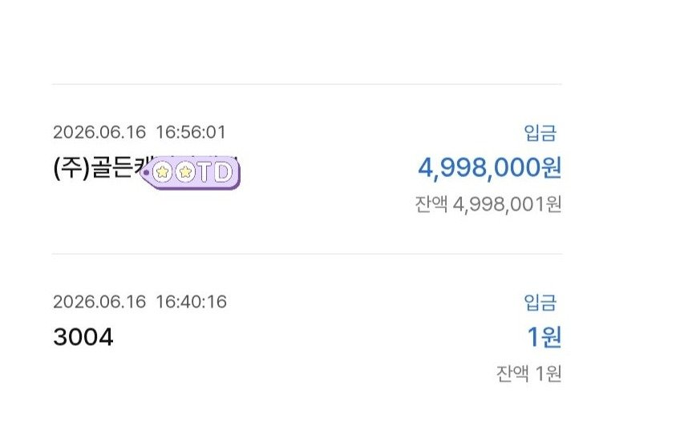

[개인회생자대출] 인가후 2.5회미납있는 4대가입직장인, 500만원 신청당일 승인
생각보다 개시부터 인가가 빨리나서 법무사비용밎 집회전 미납없이 납부하느라 매달 조금씩쪼들렸는데 카페에서 뱅크앤론 알게되어 간단한서류발급으로 상담신청당일 500만 대출받았네요 신용상태가 회생중이라 대출조회돌려봤자 조회기록만남고 될확률없습니다
그냥 여기서 상담받으시고 급한불끄시기바랍니다
대출조건 직장인
재직기간15년
사대보험 가입
신용등급 개인회생인가후 36개월중 6회차
개인회생후 채무없음
필요서류 신분증 초본 건강보험 납부및자격득실서류
월급이체내역등
#뱅크앤론 #대출 #인가결정 #미납 #개인회생

https://cafe.naver.com/cityman88/311605